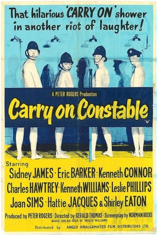

#11777 Carry On 04 - Uns kann kein krummes Ding erschüttern!
Alternativ: Carry On Constable (Englischer Titel)
 
 IMDB-Wertung: 6.3 / 10
IMDB-Wertung: 6.3 / 10  Metascore: 0
Metascore: 0 
Es herrscht Chaos auf einer Londoner Polizeiwache. Sergeant Frank Wilkins muss auf jungfräuliche Rekruten zurückgreifen, da fast alle seine Constables krank sind. Die Neulinge Tom - ein Frauenheld, Charlie - ein abergläubischer Angsthase, Stanley - ein Wissenschaftsfanatiker und der Aushilfspolizist Timothy, stürzen sich voller Übereifer in ihre neue Arbeit. Dabei verursachen sie mehr Katastrophen als sie zu verhindern wissen ...
Jahr: 1960
Dauer: 82 Minuten
FSK: 12
Land: England Studio: J. Arthur Rank FilmTonspuren:
Untertitel:
Auflösung: SD (576x352) Größe: 700 MB
Genre: Komödie
Regisseur: Gerald Thomas
Drehbuch: Norman Hudis, Brock Williams
Soundtrack: Bruce Montgomery
Darsteller:
 Sidney James als Sgt. Frank Wilkins
Sidney James als Sgt. Frank Wilkins Kenneth Connor als PC Charlie Constable
Kenneth Connor als PC Charlie Constable Charles Hawtrey als PC Timothy Gorse
Charles Hawtrey als PC Timothy Gorse Kenneth Williams als PC Stanley Benson
Kenneth Williams als PC Stanley Benson Leslie Phillips als PC Tom Potter
Leslie Phillips als PC Tom Potter Joan Sims als WPC. Gloria Passworthy
Joan Sims als WPC. Gloria Passworthy Hattie Jacques als Sgt. Laura Moon
Hattie Jacques als Sgt. Laura Moon- Shirley Eaton als Sally Barry
 Joan Hickson als Mrs. May
Joan Hickson als Mrs. May Irene Handl als Distraught Mother
Irene Handl als Distraught Mother Terence Longdon als Herbert Hall
Terence Longdon als Herbert Hall- Jill Adams als WPC Harrison
- Brian Oulton als Store Manager
 Victor Maddern als Detective Sgt. Liddell
Victor Maddern als Detective Sgt. Liddell- Esma Cannon als Deaf Old Lady
- Noel Dyson als Vague Woman
 Frank Forsyth als Citizen
Frank Forsyth als Citizen Michael Balfour als Matt
Michael Balfour als Matt- Dorinda Stevens als Young Woman
 Ronald Adam als Motorist (uncredited)
Ronald Adam als Motorist (uncredited) Arnold Diamond als Chief Constable (uncredited)
Arnold Diamond als Chief Constable (uncredited) Colin Gordon als (uncredited)
Colin Gordon als (uncredited)- Bruce Seton als (uncredited)
- Jack Silk als Constable (uncredited)
 Marianne Stone als dubbed Lucy Griffiths (uncredited)
Marianne Stone als dubbed Lucy Griffiths (uncredited) Reg Thomason als Radio Operator (uncredited)
Reg Thomason als Radio Operator (uncredited)- Frederick Treves als Radio Announcer (uncredited)
 Ian Wilson als (uncredited)
Ian Wilson als (uncredited)- Eric Barker als Inspector Mills
- Cyril Chamberlain als Thurston
- Freddie Mills als Jewel Thief
- Joan Young als Suspect
- Hilda Fenemore als Agitated Woman
- Tom Gill als Citizen
- John Antrobus als Citizen
- Robin Ray als Assistant Manager
- Diane Aubrey als Honoria
- Ian Curry als Eric
- Mary Law als Shop Assistant
- Lucy Griffiths als Miss Horton
- Eric Corrie als Citizen
- Peter Bennett als Pickpocket
- Jack Taylor als Cliff
- Eric Boon als Shorty
- Paul Cole als Barrow boy (scene cut) (uncredited)
- Jeremy Connor als Little Willie (uncredited)
- Tom Cubitt als Jeweller (uncredited)
- Tex Fuller als Van Man (uncredited)
- Jack Hetherington als Tied-up Man (uncredited)
- Arthur Howell als Constable (uncredited)
Datei: X:\7+mehr(A-Z)\Carry On\Carry On 04 - Uns kann kein krummes Ding erschüttern! (1960, FSK12, 576x352).avi seit 20.09.2019
Festplatte: HD Collection-7+mehr(A-Z)+Person
 Es gibt insgesamt 33 Filme in der Gruppe '7+mehr(A-Z)\Carry On'
Es gibt insgesamt 33 Filme in der Gruppe '7+mehr(A-Z)\Carry On'